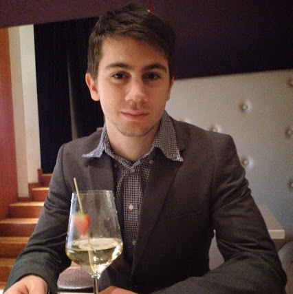
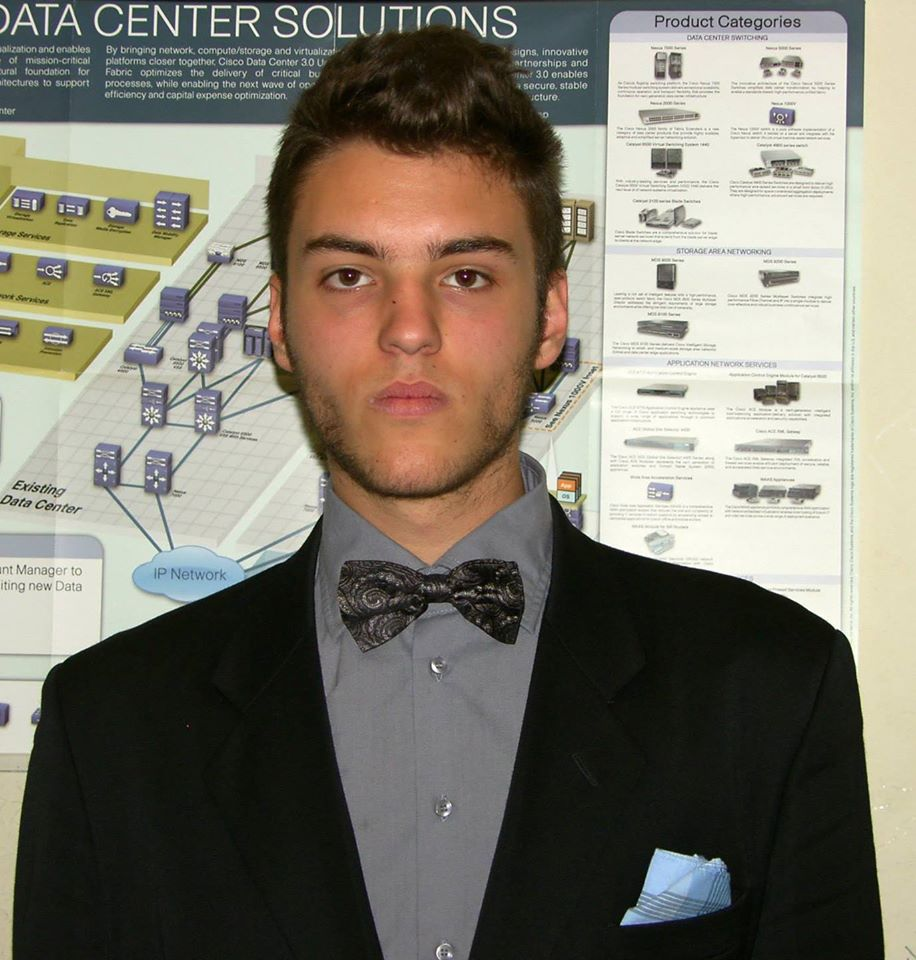

Andrea Acanfora, noto semplicemente come Acanf è un programmatore e web designer Italiano.
Nel 2015 durante gli studi ha fondato Partyhunter e ne ricopra la carica di amministratore delegato. Obiettivi? Estedere l'azienda a livello globale.

Claudio Bonucci, è un programmatore e web designer Italiano.
Nel 2015 durante gli studi ha partecipato al progetto della regione Toscana per la realizzazione di un
applicazione che tramite il qrcode permette la visualizzazione della corrispettiva opera.
Simone Carniani, noto semplicemente come Simo è un noto playboy Italiano.
Nel 2015 durante gli studi ha corteggiato decine di ragazze tra i 12 e i 14 anni, nessuna è
riuscita a resistere al suo fascino. Obiettivi? sedurre tutte le ragazze di Firenze.